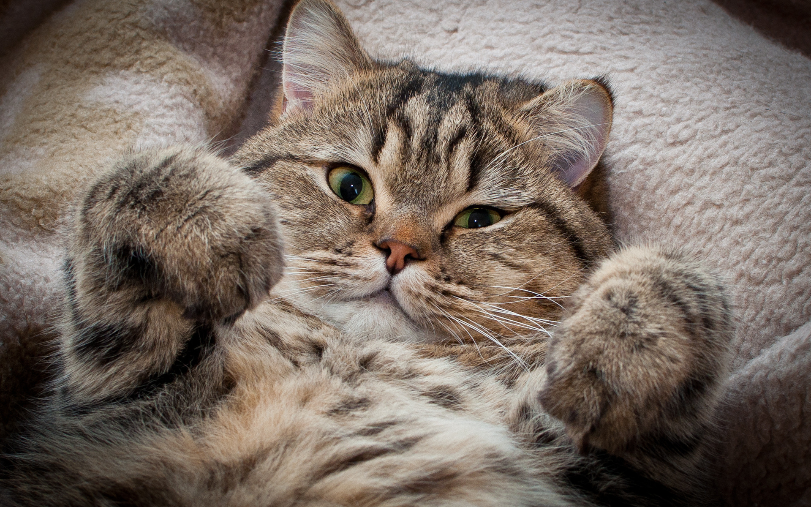

Отгадаешь загадку - в почёте будешь, нет - до конца дней в петухах ходить будешь
Итак, есть 2 картинки. Какая тебе дальше путь укажет, а какая ничего не укажет?

p.s. OpenPuff - неплохая штука. Особенно если марку ставить